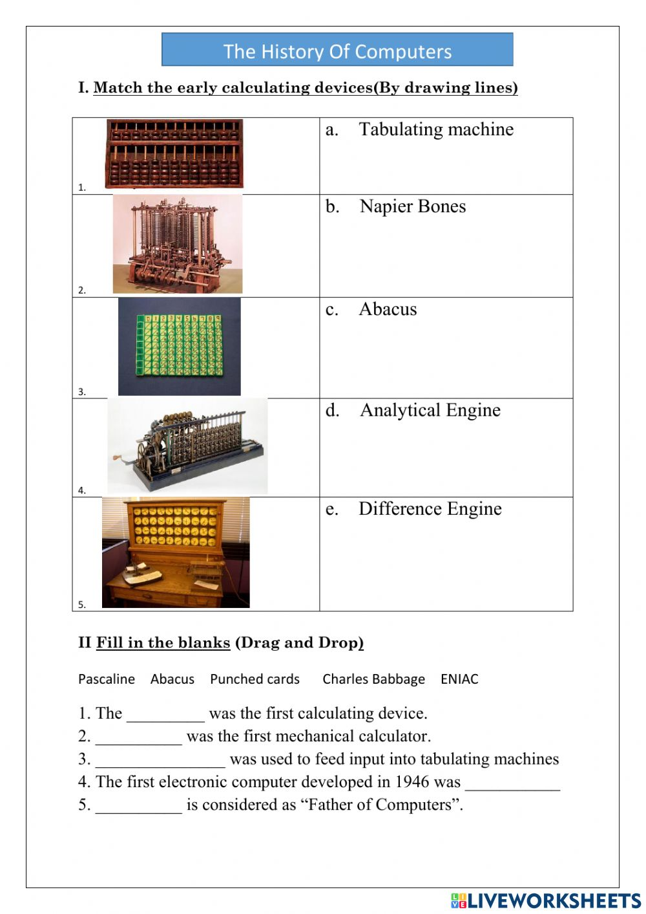

A short history of
the computer
When the computer was born
The history of computers goes back over 200 years. At first theorized by mathematicians and entrepreneurs, during the 19th century mechanical calculating machines were designed and built to solve the increasingly complex number-crunching challenges. The advancement of technology enabled ever more-complex computers by the early 20th century, and computers became larger and more powerful.
Today, computers are almost unrecognizable from designs of the 19th century, such as Charles Babbage's Analytical Engine — or even from the huge computers of the 20th century that occupied whole rooms, such as the Electronic Numerical Integrator and Calculator.
Here's a brief history of computers, from their primitive number-crunching origins to the powerful modern-day machines that surf the Internet, run games and stream multimedia.
How the computer began
Charles Babbage, an English mechanical engineer and polymath, originated the concept of a programmable computer. Considered the "father of the computer",[17] he conceptualized and invented the first mechanical computer in the early 19th century. After working on his revolutionary difference engine, designed to aid in navigational calculations, in 1833 he realized that a much more general design, an Analytical Engine, was possible.
The input of programs and data was to be provided to the machine via punched cards, a method being used at the time to direct mechanical looms such as the Jacquard loom. For output, the machine would have a printer, a curve plotter and a bell. The machine would also be able to punch numbers onto cards to be read in later. The Engine incorporated an arithmetic logic unit, control flow in the form of conditional branching and loops, and integrated memory, making it the first design for a general-purpose computer that could be described in modern terms as Turing-complete.
Conventionally, a modern computer consists of at least one processing element, typically a central processing unit (CPU) in the form of a microprocessor, along with some type of computer memory, typically semiconductor memory chips. The processing element carries out arithmetic and logical operations, and a sequencing and control unit can change the order of operations in response to stored information. Peripheral devices include input devices (keyboards, mice, joystick, etc.), output devices (monitor screens, printers, etc.), and input/output devices that perform both functions (e.g., the 2000s-era touchscreen). Peripheral devices allow information to be retrieved from an external source and they enable the result of operations to be saved and retrieved.
Devices have been used to aid computation for thousands of years, mostly using one-to-one correspondence with fingers. The earliest counting device was probably a form of tally stick. Later record keeping aids throughout the Fertile Crescent included calculi (clay spheres, cones, etc.) which represented counts of items, probably livestock or grains, sealed in hollow unbaked clay containers.[a][4] The use of counting rods is one example.
Concept of computer
The principle of the modern computer was proposed by Alan Turing in his seminal 1936 paper,[42] On Computable Numbers. Turing proposed a simple device that he called "Universal Computing machine" and that is now known as a universal Turing machine. He proved that such a machine is capable of computing anything that is computable by executing instructions (program) stored on tape, allowing the machine to be programmable.
modern computers are said to be Turing-complete, which is to say, they have algorithm execution capability equivalent to a universal Turing machine.
Concept of Memory
A computer's memory can be viewed as a list of cells into which numbers can be placed or read. Each cell has a numbered "address" and can store a single number. The computer can be instructed to "put the number 123 into the cell numbered 1357" or to "add the number that is in cell 1357 to the number that is in cell 2468 and put the answer into cell 1595." The information stored in memory may represent practically anything. Letters, numbers, even computer instructions can be placed into memory with equal ease. Since the CPU does not differentiate between different types of information, it is the software's responsibility to give significance to what the memory sees as nothing but a series of numbers.
In almost all modern computers, each memory cell is set up to store binary numbers in groups of eight bits (called a byte). Each byte is able to represent 256 different numbers (28 = 256); either from 0 to 255 or −128 to +127. To store larger numbers, several consecutive bytes may be used (typically, two, four or eight). When negative numbers are required, they are usually stored in two's complement notation. Other arrangements are possible, but are usually not seen outside of specialized applications or historical contexts. A computer can store any kind of information in memory if it can be represented numerically. Modern computers have billions or even trillions of bytes of memory.
The CPU contains a special set of memory cells called registers that can be read and written to much more rapidly than the main memory area. There are typically between two and one hundred registers depending on the type of CPU. Registers are used for the most frequently needed data items to avoid having to access main memory every time data is needed. As data is constantly being worked on, reducing the need to access main memory (which is often slow compared to the ALU and control units) greatly increases the computer's speed.
Input/output (I/O)
I/O is the means by which a computer exchanges information with the outside world.[95] Devices that provide input or output to the computer are called peripherals.[96] On a typical personal computer, peripherals include input devices like the keyboard and mouse, and output devices such as the display and printer. Hard disk drives, floppy disk drives and optical disc drives serve as both input and output devices. Computer networking is another form of I/O. I/O devices are often complex computers in their own right, with their own CPU and memory. A graphics processing unit might contain fifty or more tiny computers that perform the calculations necessary to display 3D graphics.[citation needed] Modern desktop computers contain many smaller computers that assist the main CPU in performing I/O. A 2016-era flat screen display contains its own computer circuitry.
THE BIRTH OF THE COMPUTER

Charles Babbage,
Modern computers can perform generic sets of operations known as programs. These programs enable computers to perform a wide range of tasks. A computer system